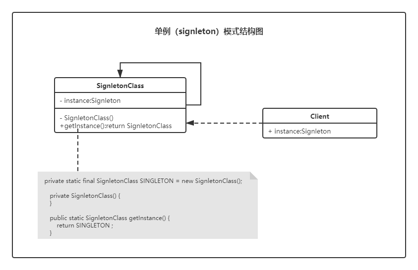

单例（Singleton）模式 📍
前排提醒：学习设计模式的时候，千万不要咬文嚼字。因为模式本身就是一种思想，我们将其思想领悟，然后活学活用，而不是为了学语文。为了技术，放下语文。因为你接触的模式越多，越会发现很多模式的定义的界线开始模糊，这就是模式本身。一生万物，万物归一。
单例模式，顾明思议。单独的实例模式，其表达的意思即字面意思。它要解决的问题就是全局只能存在一个这样的类，或者说存在一个这样的类就可以满足业务需要了。
思考以下问题🙄
你现在在做一个游戏，游戏中需要用到一个动作的音效🎵，而这个音效的大小有50M（假设），加载一次需要 2s 🕐左右的时间。你在测试的过程中发现，每次人物🧛♂️做出动作 2s 左右之后才会出现之前动作音效，现在你需要如何解决这个问题❓
资源的合理分配和利用
说到资源的合理分配和利用我想到了缓存，现在基本上大部分系统都会配备缓存，那为什么要配备缓存呢？扯远了，我们要谈的还是单例的问题。缓存的内容其实就是对资源的合理利用，比如我们将一些大对象或者频繁的 IO 操作内容保存（缓存）在一个对象中。而单例模式要解决的一个问题，就是这个问题，资源的合理分配和利用问题
你一直都在用的 singleton 模式
其实你如果细心一些你会发现，单例模式你每天都在使用
相信我们每位小伙伴都写过一个类，叫做 GlobalConstants （全局常量）而这个类中定义的所有变量（variable）都是 static final 的，大家肯定都知道其中的原因，有 2 个原因：
- 静态类变量全局访问
- final 修饰使其内容不可变
哦，顺带一提，java 中 String 类也是 singleton 模式的一种体现，当然，这不绝对
- 常量
- 数据库连接池
- Spring ApplicationContext
- JSP Application
- …….
单例模式结构📐

📢要点
- 对象有本身自行创建，即构造函数私有化。
- 全局统一访问，实例可被反复访问，即实例为静态实例。
单例模式实现的6种方式
对于单例模式的实现方法有很多种，也看到大家的思维很活跃。但我脑子也不好使。我只想解决一些根本问题（使用单例模式），所以，我们每种方法都讨论一下。🤣
划重点 : ‼ 单例模式的创建只能自己完成
1. 延迟加载方式1（懒汉式）(线程不安全❓)
|
对于延迟加载（懒汉式）单例模式的线程不安全其实说的就线程对共享数据的使用而言，但就具体问题而言，单例模式本身就没有线程安全与不安全只分。之所以考虑到线程安全不安全，其实是对上面所说的资源的合理分配和利用，这种方式很明显没有做到资源的合理分配和利用。如果在多线程场景下很可能造成资源的浪费。
单例模式，根本就没有线程安全与不安全，是错误的使用导致它有了这个问题。
📃lvgo语录：学东西要知其然而知其所以然，即使千年流传的东西，你都应该保持着一颗质疑的心。❓❤🙄
2. 延迟加载方式2（懒汉式）
|
关于 volatile 的更多内容欢迎在个人博客搜索关键字 “volatile”
通过使用同步锁与 volatile 使得单例模式变得安全资源合理的分配和利用，但每次调用都要同步，岂不是另外一种资源的浪费体现？🙄
3. 双重检查锁 （DCL）
既然要合理利用资源，又要保证调用方法本身不产生资源浪费。这样就促成了 DCL 双重检查锁方式。（技术人的思维就是这么活，一个单例模式被实现的五花八门。害的我们这些设计模式学徒从入门到放弃越来越快）
前面说了 DCL 是为了解决资源的合理分配和利用，那我们一起来看看 DCL 是如何工作的
|
📃笔记：DCL 方式是为了解决延迟加载（懒汉式）中的资源合理分配和利用问题。
当然，以上 3 种方式我，注意是我！全不推荐使用！！😂
4. 立即加载方式（饿汉式）
|
立即加载方式是通过 classloader 来完成单例的创建，即当类第一次被主动调用初始化的时候。即使该类你不会使用（但是❗不用你还要设计成单例，我觉得这种方式已经可以满足一般的业务场景了）
Runtime.java 中使用该种方式实现
拓展类的装载过程：加载 - 验证 - 准备 - 解析 - 初始化 - 使用 - 卸载
5. 内部类 （推荐使用）
|
这个方式综合使用了Java的 类级内部类 和多线程缺省同步锁的知识 JVM 来保证资源不会被浪费，巧妙地同时实现了延迟加载和线程安全，比起花里胡哨的 DCL ，这种方式更好的解决了实质的问题，并且没有了 DCL 的副作用，同时不受jdk版本的影响。
👍当你的业务场景，很明确系统 📢启动不需要的时候，以后也不知道需不需要 ，不用怀疑，用它！稳！资源控制的死死的
一般我们默认会选择这种方式来实现单例模式，简单、好用、强大。
关于内部类的一些拓展，更多关于内部类内容查看我的 CSDN 博客
内部类分为对象级别和类级别
类级内部类指的是，有static修饰的成员变量的内部类。
如果没有static修饰的成员变量的内部类被称为对象级内部类。
类级内部类相当于其外部类的static成员，它的对象与外部类对象间不存在依赖关系，相互独立，因此可直接创建。
对象级内部类的实例，是必须绑定在外部对象实例上的。
类级内部类只有在第一次被使用的时候才被会装载。
6. 枚举（推荐使用）
|
这种方法是一个叫做 Joshua Bloch 的人提出的，对于学习这种单例模式，我觉得更有必要带大家认识一下这个人。待会介绍。先说这种设计方式。
👍 Joshua Bloch 推荐的一种单例方式，与立即加载方式有过之而无不及。
简单、大方、得体、完美❓
对于用枚举来实现单例模式近乎完美。因为它完完全全的由虚拟机来完成单例创建，这种方式是不是想到了和我们上面讲到的一个方式有点类似，没错，就是我们的立即加载方式（饿汉式），但是它相比立即加载方式却多了很多内容。就是我们接下来要说的保护单例模式。
保（po）护（huai）单例模式
破坏单例
有即时我们使用了以上的方式创建单例对象，同样会有两种方式来破坏单例对象 （除枚举方式外）
- 通过反射破坏单例
- 通过序列化破坏单例
保护单例
上面的两点对于枚举来说，不存在。但我们自己写的方法如何规避这两点呢？
- 调整私有构造函数，阻止反射调用单例。
- 重写 readResolve() 方法。
调整私有构造函数，阻止反射调用单例
|
重写 readResolve() 方法
|
单例模式总结
📢要点
- 对象有本身自行创建，即构造函数私有化。
- 全局统一访问，实例可被反复访问，即实例为静态实例。
实现方式的选择
内部类 > 枚举 > 立即加载
优缺点
我以为设计模式本身就是一种解决问题的办法，优缺点就本身而言有意义。相对来说即无意义。既然选择了这种模式，那固然有一定的道理。所以以后设计模式的优缺点也不会过多发表意见，没有最好，只有最合适。优缺点已经没有意义了。
优点：资源的合理分配和利用
缺点：违反了单一职责原则
简单说说 Joshua Bloch
《Effective Java》、Effective 系列图书作者。同时我们每天都在使用着他写的代码，集合框架，它们的位置位于java.util.*。
|
老爷子的github ：https://github.com/jbloch
亦或繁星、亦或尘埃。星尘✨，为了梦想，学习技术，不要抱怨、坚持下去💪。
欢迎关注星尘的一个朋友一起交流学习🤓。

扫码关注公众号，回复“加群”一起交流学习